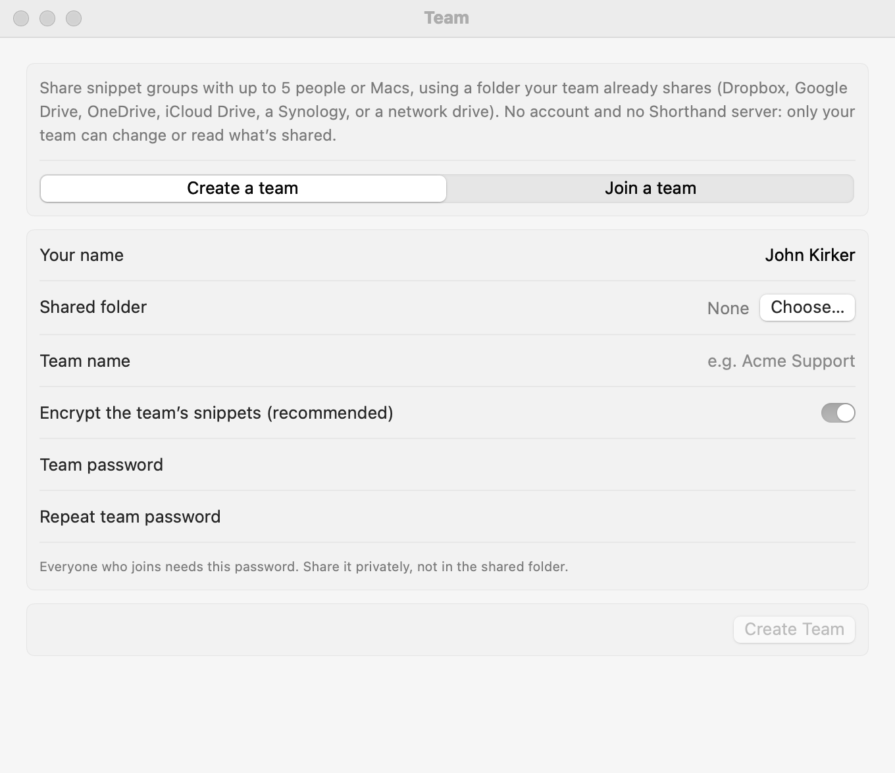
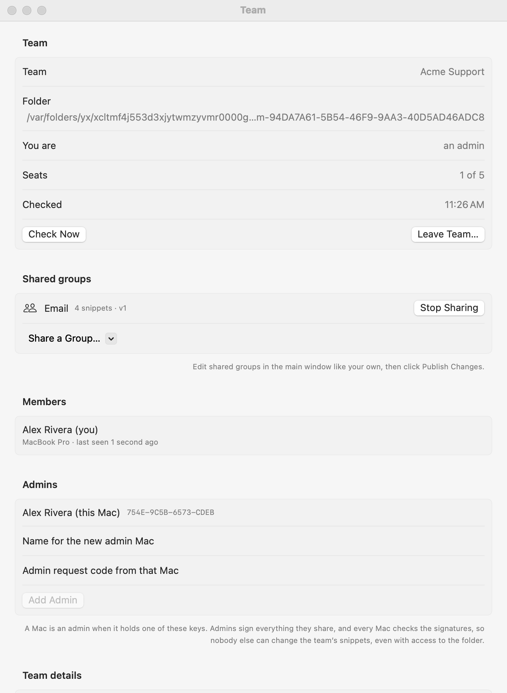

Teams
Share snippet groups with up to 5 people or Macs, using a folder your team already shares. No account and no Shorthand server: only your team can read or change what’s shared.
How it works
- The team picks a folder everyone can reach: a shared Dropbox, Google Drive, OneDrive, or iCloud Drive folder, a Synology or other NAS, or a network drive.
- Admins share groups into that folder. Everyone else’s Shorthand reads them, checks them, and uses them like their own snippets, read-only.
- Everything an admin shares is signed. Every Mac checks the signature, so nobody else can change the team’s snippets, even someone with access to the folder.
- With a team password, the shared snippets are also encrypted, so the storage service only sees scrambled data.
- A team has up to 5 people or Macs.
Create a team

- Make an empty folder in your team’s shared storage.
- Open Settings ▸ Team, choose Create a team, enter your name and the team’s name, and choose the folder.
- Keep Encrypt the team’s snippets on and choose a team password (at least 8 characters). Share it with your team privately, not in the shared folder.
- Click Create Team. This Mac becomes the team’s first admin.
Join a team
- Make sure the team’s shared folder is on your Mac (for example, accept the Dropbox or Google Drive share).
- Open Settings ▸ Team, choose Join a team, enter your name, and choose the folder.
- Shorthand shows the team’s name and each admin’s code, such as
D04A-78EA-FAE9-1B0C. Check the code with an admin, in person or by phone. It proves the folder really is your team’s. - Enter the team password if asked, and click Join Team.
Share groups (admins)

- In Settings ▸ Team ▸ Shared groups, click Share a Group… and pick one of your groups.
- Edit a shared group in the main window like any other. When you’re ready, click Publish Changes in Settings ▸ Team. Members get the update within about a minute.
- Stop Sharing removes the group from the team. Your own copy stays.
Using team snippets
- Shared groups appear in the sidebar under the team’s name and expand like your own snippets.
- They’re read-only. To make your own version, select the group and click Copy to My Snippets.
- If one of your snippets has the same abbreviation as a team snippet, yours is used. The team snippet shows a ⚠ sign.
- Team script snippets (AppleScript, shell, JavaScript) don’t run unless you turn on Run script snippets shared by this team in Settings ▸ Team. Turn it on only if you trust the team’s admins.
Team details
Admins can set details once for everyone, such as the company name, phone number, and address. Use them in any snippet with %team: and the detail’s name: %team:Company% types the Company value. When an admin changes it, everyone’s snippets use the new value.
Members and seats
- Settings ▸ Team ▸ Members lists everyone who joined, their Mac, and when Shorthand last checked in.
- A team has 5 seats. Each Mac that joins uses one, so one person on two Macs uses two. When all 5 are taken, joining is refused; an admin can remove a member to free a seat. Need more? Start a second team.
Admins
A Mac is an admin when it holds one of the team’s admin keys, which stay in that Mac’s Keychain.
- On the Mac that should become an admin, open Settings ▸ Team and click Ask to Be an Admin…. Copy the code it shows and send it to an admin.
- The admin pastes the code into Admin request code from that Mac, names it, and clicks Add Admin.
- Within about a minute, the new Mac becomes an admin.
An admin can remove another admin. A team always keeps at least one.
Security
- Members can’t change shared snippets, and a changed, swapped, or out-of-date file is ignored and listed as a problem in Settings ▸ Team.
- Admins can change the team password, which also changes the encryption key. Someone you removed keeps what was already on their Mac, but can’t read anything shared afterward. Give members the new password; they enter it in Settings ▸ Team.
- Admins should turn on the app lock, since anyone using an admin’s Mac could publish to the team.
Leaving a team
Click Leave Team… in Settings ▸ Team. Shared groups disappear from this Mac and its seat is freed; copies you made in your own snippets stay.